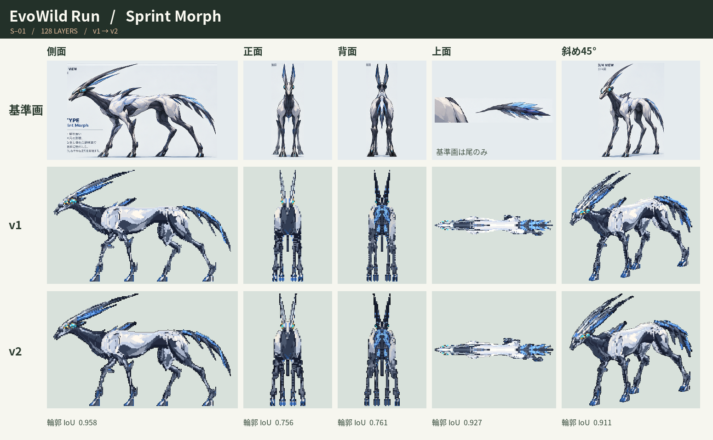

REVISE 遠景群走のLODを継続採用。レース標準への採用は保留。
頭冠の左右それぞれが全25姿勢で連結し、正面・背面で隠れる下脚が減った。全景100体を128層指定で走らせたPC幅の標本計測は、v1の 1.60 fpsから 34.97 fpsに改善。同じ100体をコース旋回中に測るとPC幅の全景で 31.07 fps、手前を拡大した近遠混在で 1.11 fps。
| 表示・128層指定 | 1体 | 10体 | 50体 | 100体 |
|---|---|---|---|---|
| PC幅 / v1 積層 | 26.90 | 10.65 | 3.12 | 1.60 |
| PC幅 / v2 距離LOD | 22.35 | 5.45 | 38.73 | 34.97 |
| スマホ幅 / v1 積層 | 41.08 | 10.57 | 2.41 | 1.43 |
| スマホ幅 / v2 距離LOD | 22.93 | 60.07 | 56.58 | 43.55 |

側面の輪郭IoUは 0.958、斜め45°は 0.911。正面・背面で脚の外側と内側の軌道を分けた。下表は下脚44層で、各脚を単独投影した面積に対して他の脚に隠れずに見える面積の比率。全25姿勢×4脚の最小値を示す。
| 可視率の下限 | v1 | v2 |
|---|---|---|
| 正面 | 78.9% | 90.2% |
| 背面 | 69.7% | 92.9% |
頭冠だけを対象に面が接する6近傍で調べると、v1の成分数は 4～6、v2は全姿勢で2。原画の細い中心線をポーズ変換した後に断面の段差を接続した。俯角12°で2°ずつ一周させ、輪郭の上25%で1コマだけ反転する画素の割合は 0.86% → 0.64%、単発の輝度反転は255段階で 13.8 → 10.4。近景には4サンプル被覆も適用した。細い輪郭の画素変化は残る。部位の検査値 / 画面上の検査値
積層の支持脚を個別に追跡し、足裏の最低断面の重心が支持ポーズの間にワールド座標で動いた距離を測った。24ポーズのP95は直線で 1.82 → 1.82、半径1750のカーブで 2.81 → 2.83（側面作画の単位、長手1テクセル＝3）。各支持区間を8分割し、着地姿勢をまたぐ転がりも含む。12・24ポーズの接地評価
遠景は同じ128層の色・深度・被覆から作った48方位×10俯角×25姿勢。支持脚の補正と向きは積層と共有する。正投影の画面占有幅に視線方向の距離補正を加えて切り替え、切替帯は画素を相補的に割り当てる。頭冠や遠側の足先には角度量子化と半透明縁の差がある。
| 投影幅 px | 輪郭IoU 最小 | 輪郭IoU 中央 | 重心差 最大 px | 色差 中央 /255 |
|---|---|---|---|---|
| 68 | 0.900 | 0.927 | 0.45 | 26.0 |
| 102 | 0.880 | 0.910 | 0.83 | 26.3 |
| 126 | 0.855 | 0.901 | 1.14 | 26.9 |
上表は7方位×5俯角、同じ走行ポーズの全積層とスプライトの対。連続ズームでは投影幅72～160 pxを81画面で横断し、積層との差を差し引いた余分な重心移動は最大 0.48 px。走りながらの遠景360°では最大 1.44 px、輪郭IoUの最小は 0.828。重心差が小さくても、細片のすべてが一致するわけではない。全261画面
旧版のPC幅・128層・100体で、床・影・ポーズ別の呼び出しを保持して積層の個体数だけを変えた。全個体は約341万三角形で 592.2 ms、各ポーズ1体で 144.5 ms、個体の三角形を除くと 26.2 ms。Workerは読み込み時にメッシュを作る。群走中に増えていたのは主に同じ面を個体数分処理するGPU負荷だった。切り分け計測
24ポーズ、俯角12°、カメラは毎秒40°旋回。コース上の影・床・個体を毎フレーム更新した。全景は倍率1×、近遠混在は開始時の体長が約122 pxになる倍率（上限7×）。個体はすべてシミュレートし、ズーム時は画面の外に完全に出た個体の本体を描画対象から外す。内訳はフレーム間の各中央値。
| 表示 | カメラ | 総体数 | 倍率 | fps | p95 ms | 同期込 ms | 積層 / 移行 / 2D / 画面外 |
|---|---|---|---|---|---|---|---|
| PC幅 | 全景 | 50 | 1.00× | 32.77 | 55.7 | 27.6 | 0 / 0 / 50 / 0 |
| PC幅 | 全景 | 100 | 1.00× | 31.07 | 57.7 | 30.4 | 0 / 0 / 100 / 0 |
| PC幅 | 近遠混在 | 50 | 2.80× | 1.70 | 812.1 | 584.0 | 18 / 15.5 / 19.5 / 0 |
| PC幅 | 近遠混在 | 100 | 4.00× | 1.11 | 1415.1 | 893.7 | 28 / 27 / 42 / 5 |
| スマホ幅 | 全景 | 50 | 1.00× | 50.19 | 41.6 | 16.0 | 0 / 0 / 50 / 0 |
| スマホ幅 | 全景 | 100 | 1.00× | 45.26 | 46.7 | 18.8 | 0 / 0 / 100 / 0 |
| スマホ幅 | 近遠混在 | 50 | 4.14× | 1.38 | 999.9 | 717.2 | 17 / 11 / 19 / 10.5 |
| スマホ幅 | 近遠混在 | 100 | 5.31× | 1.08 | 1394.4 | 913.0 | 11.5 / 17 / 22 / 42.5 |
Chromium 151.0.7922.173 / ANGLE・SwiftShader。PCは1280×900・描画877×414・CPU 1×、スマホ幅は390×844・描画352×335・CPU 4×。物理スマートフォンは未測定。v1の既報1.80 fpsと今回の再計測は別の実行。性能表は全方式で同じカメラ、位相分布、24ポーズと1画素の同期読出しを使った。3フレーム予熱後、1.2秒以上かつ5フレーム以上の単回計測。高負荷のp95は少数標本。
「発行」はJSの描画呼び出し時間。「同期込」は描画開始から読出し終了まで。「GPU」は有効なEXT_disjoint_timer_query_webgl2による描画区間。p95は表示フレーム間隔。三角形・drawは最終計測フレームで実際に発行した値（床・影を含む）。Framebuffer転送はCSVのblits列。全景の標本比較は全個体が画面内に収まる。
| 表示 | 方式 | 体 | fps | p95 ms | 発行 ms | 同期込 ms | GPU ms | 三角形 | draw | JS MiB | GL MiB | RSS MiB |
|---|---|---|---|---|---|---|---|---|---|---|---|---|
| PC幅 | v1 積層 | 1 | 26.9 | 64 | 0.285 | 33.755 | 23.176 | 33,982 | 3 | 2.52 | 22.7 | 845.02 |
| PC幅 | v2 積層 | 1 | 20.83 | 71.4 | 0.292 | 43.432 | 36.079 | 34,508 | 3 | 3.3 | 32.63 | 880.35 |
| PC幅 | v2 距離LOD | 1 | 22.35 | 74.6 | 0.281 | 39.93 | 26.142 | 35,292 | 3 | 3.84 | 50.91 | 871.12 |
| PC幅 | v1 積層 | 10 | 10.65 | 112.6 | 0.338 | 90.246 | 81.812 | 340,637 | 12 | 2.92 | 22.7 | 845.3 |
| PC幅 | v2 積層 | 10 | 4.89 | 212.6 | 0.433 | 203.283 | 192.107 | 346,093 | 12 | 3.64 | 32.63 | 880.58 |
| PC幅 | v2 距離LOD | 10 | 5.45 | 209.3 | 1.4 | 176.714 | 172.405 | 345,591 | 13 | 3.44 | 50.91 | 917.32 |
| PC幅 | v1 積層 | 50 | 3.12 | 350.9 | 0.48 | 313.42 | 312.196 | 1,705,587 | 26 | 2.81 | 22.7 | 846.12 |
| PC幅 | v2 積層 | 50 | 1.31 | 791.3 | 1.22 | 760.24 | 746.773 | 1,724,269 | 26 | 3.21 | 32.63 | 881.34 |
| PC幅 | v2 距離LOD | 50 | 38.73 | 52 | 0.43 | 24.494 | 11.573 | 3,650 | 2 | 2.89 | 50.91 | 919.29 |
| PC幅 | v1 積層 | 100 | 1.6 | 664.5 | 0.48 | 619.3 | 614 | 3,409,083 | 26 | 2.88 | 22.7 | 846.34 |
| PC幅 | v2 積層 | 100 | 0.63 | 1612.4 | 2.06 | 1576.14 | 1562.184 | 3,445,453 | 26 | 3.65 | 32.63 | 841.71 |
| PC幅 | v2 距離LOD | 100 | 34.97 | 53.4 | 0.445 | 27.274 | 14.549 | 7,300 | 2 | 3.46 | 50.91 | 919.5 |
| スマホ幅 | v1 積層 | 1 | 41.08 | 46.3 | 0.79 | 20.642 | 14.852 | 35,468 | 3 | 2.56 | 22.7 | 795.54 |
| スマホ幅 | v2 積層 | 1 | 21.25 | 67 | 2.235 | 44.885 | 37.799 | 34,776 | 3 | 3.36 | 26.08 | 803.34 |
| スマホ幅 | v2 距離LOD | 1 | 22.93 | 64.2 | 2.579 | 41.207 | 31.52 | 33,042 | 3 | 2.86 | 44.36 | 796.75 |
| スマホ幅 | v1 積層 | 10 | 10.57 | 105.5 | 1.485 | 92.231 | 84.208 | 340,623 | 12 | 2.96 | 22.7 | 796.62 |
| スマホ幅 | v2 積層 | 10 | 3.81 | 294.1 | 1.82 | 260.04 | 248.35 | 345,583 | 12 | 3.66 | 26.08 | 803.56 |
| スマホ幅 | v2 距離LOD | 10 | 60.07 | 21.4 | 1.163 | 8.111 | 2.668 | 730 | 2 | 3.01 | 44.36 | 847.36 |
| スマホ幅 | v1 積層 | 50 | 2.41 | 458.7 | 5.48 | 412.52 | 404.865 | 1,704,607 | 26 | 2.72 | 22.7 | 796.72 |
| スマホ幅 | v2 積層 | 50 | 0.78 | 1434.1 | 3.4 | 1277.22 | 1265.159 | 1,723,685 | 26 | 4.61 | 26.08 | 804.48 |
| スマホ幅 | v2 距離LOD | 50 | 56.58 | 36.4 | 1.346 | 12.031 | 5.816 | 3,650 | 2 | 3.25 | 44.36 | 847.14 |
| スマホ幅 | v1 積層 | 100 | 1.43 | 821.8 | 3.64 | 694.36 | 680.104 | 3,410,127 | 26 | 2.78 | 22.7 | 796.34 |
| スマホ幅 | v2 積層 | 100 | 0.38 | 2960.3 | 1.98 | 2645.02 | 2639.252 | 3,444,033 | 26 | 3.71 | 26.08 | 804.61 |
| スマホ幅 | v2 距離LOD | 100 | 43.55 | 42.2 | 3.625 | 20.615 | 11.313 | 7,300 | 2 | 2.92 | 44.36 | 847.4 |
| 表示 | 方式 | 体 | fps | p95 ms | 発行 ms | 同期込 ms | GPU ms | 三角形 | draw | JS MiB | GL MiB | RSS MiB |
|---|---|---|---|---|---|---|---|---|---|---|---|---|
| PC幅 | v1 積層 | 1 | 33.06 | 55.6 | 0.46 | 28.163 | 16.596 | 21,570 | 3 | 2.6 | 14.5 | — |
| PC幅 | v2 積層 | 1 | 28.32 | 60.7 | 0.6 | 33.859 | 17.269 | 22,152 | 3 | 3.39 | 24.35 | — |
| PC幅 | v2 距離LOD | 1 | 27.51 | 60.9 | 0.391 | 34.623 | 19.46 | 21,318 | 3 | 2.84 | 42.63 | — |
| PC幅 | v1 積層 | 10 | 14.87 | 89.1 | 0.279 | 55.016 | 49.493 | 217,899 | 12 | 3.13 | 14.5 | — |
| PC幅 | v2 積層 | 10 | 8.1 | 165.6 | 0.38 | 114.64 | 111.386 | 220,175 | 12 | 3.42 | 24.35 | — |
| PC幅 | v2 距離LOD | 10 | 7.43 | 180.8 | 0.422 | 124.422 | 112.938 | 219,429 | 13 | 3.33 | 42.63 | — |
| PC幅 | v1 積層 | 50 | 4.79 | 219.3 | 0.467 | 202.95 | 199.287 | 1,087,387 | 26 | 3.1 | 14.5 | — |
| PC幅 | v2 積層 | 50 | 1.96 | 542.3 | 0.6 | 505.2 | 497.918 | 1,098,963 | 26 | 3.66 | 24.35 | — |
| PC幅 | v2 距離LOD | 50 | 38.62 | 51.5 | 0.458 | 24.294 | 11.638 | 3,650 | 2 | 2.83 | 42.63 | — |
| PC幅 | v1 積層 | 100 | 2.49 | 452.1 | 0.36 | 393.6 | 381.654 | 2,175,835 | 26 | 3.24 | 14.5 | — |
| PC幅 | v2 積層 | 100 | 0.97 | 1087.8 | 0.58 | 1022.96 | 1013.542 | 2,198,263 | 26 | 3.38 | 24.35 | — |
| PC幅 | v2 距離LOD | 100 | 33.06 | 55.1 | 0.91 | 28.11 | 14.475 | 7,300 | 2 | 3.34 | 42.63 | — |
| スマホ幅 | v1 積層 | 1 | 45.5 | 47.6 | 1.495 | 18.96 | 12.201 | 22,414 | 3 | 2.68 | 14.5 | — |
| スマホ幅 | v2 積層 | 1 | 26.64 | 59.9 | 2.097 | 34.931 | 25.942 | 22,604 | 3 | 3.83 | 17.8 | — |
| スマホ幅 | v2 距離LOD | 1 | 27.17 | 60.9 | 0.861 | 32.215 | 25.799 | 22,152 | 3 | 2.67 | 36.08 | — |
| スマホ幅 | v1 積層 | 10 | 13.22 | 108.2 | 3.338 | 72.738 | 64.704 | 217,469 | 12 | 3.14 | 14.5 | — |
| スマホ幅 | v2 積層 | 10 | 5.29 | 209.1 | 3.357 | 186.171 | 179.299 | 220,013 | 12 | 4.2 | 17.8 | — |
| スマホ幅 | v2 距離LOD | 10 | 56.91 | 33.1 | 1.291 | 11.575 | 4.156 | 730 | 2 | 3.23 | 36.08 | — |
| スマホ幅 | v1 積層 | 50 | 3.53 | 311.9 | 4.16 | 274.88 | 268.523 | 1,088,001 | 26 | 2.88 | 14.5 | — |
| スマホ幅 | v2 積層 | 50 | 1.05 | 1195.6 | 5.54 | 950.44 | 940.808 | 1,099,545 | 26 | 3.56 | 17.8 | — |
| スマホ幅 | v2 距離LOD | 50 | 53.93 | 39.9 | 2.105 | 14.16 | 7.078 | 3,650 | 2 | 2.85 | 36.08 | — |
| スマホ幅 | v1 積層 | 100 | 2.11 | 506.1 | 2.2 | 471.22 | 464.331 | 2,176,643 | 26 | 2.92 | 14.5 | — |
| スマホ幅 | v2 積層 | 100 | 0.59 | 1753.9 | 9.9 | 1694.72 | 1680.277 | 2,198,263 | 26 | 3.39 | 17.8 | — |
| スマホ幅 | v2 距離LOD | 100 | 45.65 | 45.5 | 2.433 | 17.911 | 9.608 | 7,300 | 2 | 3.12 | 36.08 | — |
JSはCDPの使用ヒープ。GLはメッシュバッファ、ロード中の角度の色・深度テクスチャ、床キャッシュ、近景MSAAの主な論理割当量。ドライバの実VRAM総量は未計測。RSSは128層の別実行でChromeの各プロセスのVmRSSを合算し、共有ページが重複しうる。64層はJS・GL割当を収録した。スマホ幅のほうが描画面積は小さい。48条件CSV / RSS内訳
群走の遠景LODはKEEP、レース標準はREVISE。 全景では走行位相と17色の作画を保って大幅に高速化した。手前に積層が集まると、近景の被覆計算と切替帯で両方を描く負荷が増える。PC幅の128層・10体の標本ビューは 5.45 fps。全景100体の値だけでレース標準を承認しない。操作試験 / PC画面 / タッチ画面
git switch exp/s-pixel-stacking-zero-20261121 python3 -m http.server 4173 --bind 127.0.0.1 --directory public # http://127.0.0.1:4173/s-pixel-lab/v2/index.html
リポジトリ内の scripts/s-pixel/v2/README.md に作画、ベイク、動画・計測の全コマンドを記載した。